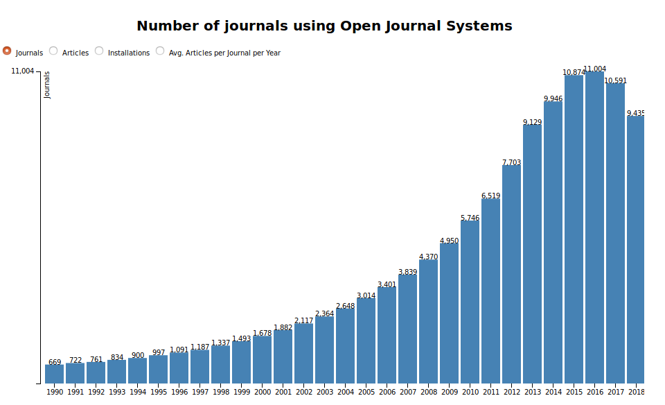
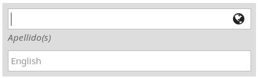
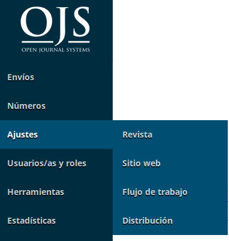
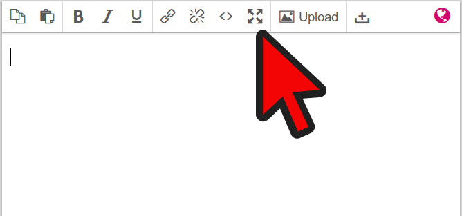
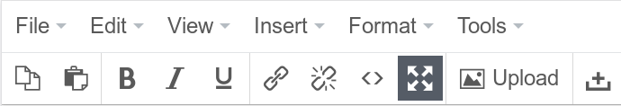
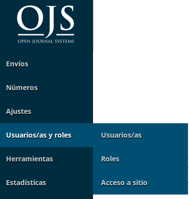
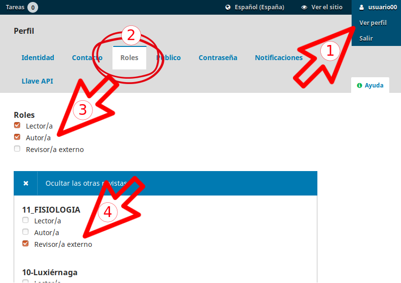
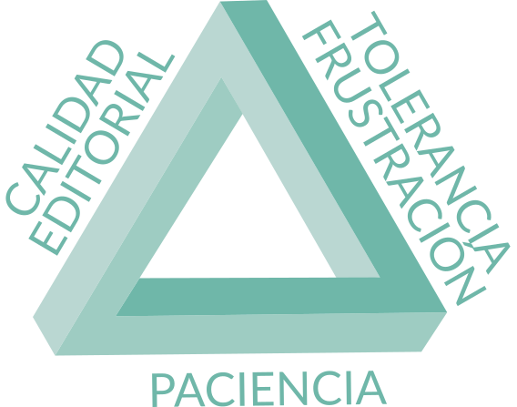

OJS-3
Juan Muñoz y Marc Bria
Universitat Autònoma de Barcelona
http:/presentaciones.psicologiasocial.eu/OJS3.html

Sistemas de gestión de revistas electrónicas
- Gestionar un sitio web de una o varias revistas electrónicas.
- Permitir el registro y gestión de usuarios con distintos roles.
- Enviar y recibir originales para su publicación.
- Gestionar el proceso de revisión de originales.
- Llevar a cabo el proceso de edición y corrección de galeradas
- Publicar los artículos (en distintos formatos).
- Permitir la interoperabilidad con otros sistemas y estándares.

Mejoras en OJS 3
- Interfaz
- Flujo de trabajo
- Roles flexibles
- Acceso a funciones y tareas
- Discusiones editoriales
- Editor multilingüe
- Múltiples archivos por envío
Errores web de las revistas académicas
- Dar a los lectores una pobre experiencia de lectura
- No dar a los lectores una forma de seguir nuestro contenido en línea
- Navegación amigable en dispositivos móviles
https://blog.scholasticahq.com/post/does-your-academic-journal-website-make-these-mistakes/
OJS3: Interfaz
Configuración
Revistas UAA
Edición multilingüe

Información completa
Falta traducción
Sin información
Ajustes

Editor

Editor

Roles editoriales
Algunas ideas
Idiomas

Formularios de revisión
Usuarios y roles

Crear Usuarios
- Editor##
- EditorSeccionArt##
- CorrectorMaquetador##
En todos, correo electrónico editor##@nomail.mx
Crear nuevos roles
- “Usuario” > Salir
- http://ojs.uaa.mx
- Seleccionar revista##
- Registrarse como usuario##
- Utilizar correo real no utilizado hasta el momento
- “Usuario” > Ver perfil
- Roles
- Seleccionar “Autor”
- “Registrarse en otra revista”
- Como revisor externo en revista##

Indexación
Diferentes métricas
https://www.metrics-toolkit.org/
Conceptos
- Portales
- Plataformas de acceso a un conjunto de revistas (p.ej. portal revistas aguascalientes)
- Bases de datos
- Contienen registros bibliográficos: referencias bibliográficas, resúmenes, palabras clave, etc. Pueden incluir el texto completo de los contenidos o enlaces al texto completo.
- Índices
- Base de datos que contiene registros bibliográficos con algún valor agregado (por ejemplo, el cumplimiento de cierto tipo de requisitos y criterios). P.ej. Latindex.
Pasos (1)
- Motores de búsqueda primarios
- Motores de búsqueda académicos
- Google Scholar https://scholar.google.com/intl/en/scholar/inclusion.html
- Microsoft Academic https://academic.microsoft.com/FAQ
Pasos (y 2)
- Índices académicos generales
- DOAJ
- EBSCO - Fuente Académica
- Dialnet
- Latindex
- Redalyc
- Scielo
- Scopus
- Web of Science
- Específicos de disciplina
https://en.wikipedia.org/wiki/List_of_academic_databases_and_search_engines
Cómo tener éxito
“The success of a journal is based on adherence to publication ethics, reputation of editorial board, transparent editorial policies, quality of peer review and the number of citations”
https://twitter.com/fake_journals/status/1155146590174269441?s=09
Las claves
